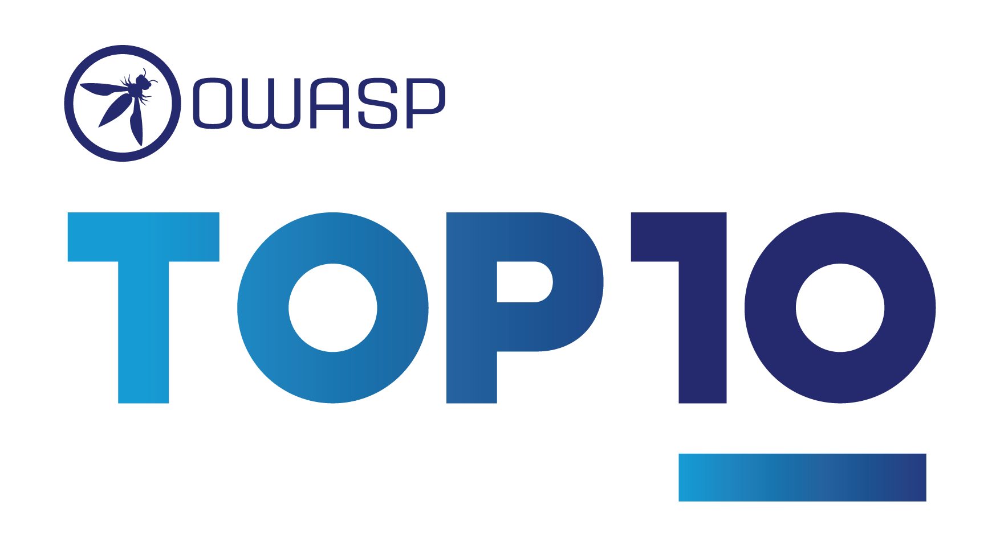

- en - English
- ar - العربية
- es - Español
- fr - Français
- id - Indonesian
- it - Italiano
- pt_BR - Português (Brasil)
- zh_CN - 简体中文
- zh_TW - 繁體中文
導入
OWASP Top 10 - 2021 へようこそ

OWASP トップ 10 の最新版へようこそ! OWASP トップ 10 2021年版は、グラフィックデザインが一新され、1ページのインフォグラフィックになっています。インフォグラフィックは、ホームページから入手でき、印刷することができます。
今回のトップ10の作成にあたって、貴重な時間やデータを提供してくださったすべての皆さんに感謝します。皆様のご協力なくしては、OWASP トップ 10 2021年版は存在し得ません。本当に、感謝いたします。
2021年版トップ10の変更点
2021年版トップ10では、3つの新しいカテゴリー、4つのカテゴリーの名称とスコープの変更がありました。統合されたものもいくつかあります。

- A01:2021-アクセス制御の不備 は、5位から最も深刻なWebアプリケーションのセキュリティリスクへと順位を上げました。貢献されたデータから、平均でテストされたアプリケーションの3.81%が1つ以上の共通脆弱性タイプ一覧（CWE）を持っており、このリスクカテゴリに該当するCWEは 318,000 件以上存在していたことがわかりました。他のカテゴリーに比べ、「アクセス制御の欠陥」にあたる34件のCWEがアプリケーション内で多く発生していました。
- A02:2021-暗号化の失敗 は、ひとつ順位を上げて2位になっています。以前は、A3:2017-機微な情報の露出 と呼ばれていましたが、これは根本的な原因というより幅広くみられる症状と言えます。ここでは、機密データの漏えいやシステム侵害に多く関連する、暗号技術にまつわる失敗に焦点を当てています。
- A03:2021-インジェクション は、3位に下がっています。94%のアプリケーションで何らかのインジェクションに関する問題が確認されています。最大発生率は19%、平均発生率は3.37%であり、このカテゴリにあたる33のCWEは、アプリケーションでの発生数が2番目に多く見られます。発生数は27万4千件でした。今回から、クロスサイトスクリプティングは、このカテゴリに含まれています。
- A04:2021-安全が確認されない不安な設計 は、2021年に新設されたカテゴリーで、設計上の欠陥に関するリスクに焦点を当てています。一業界として、我々が純粋に「シフトレフト」することを望むのであれば、脅威モデリングや、安全な設計パターンと原則、また、リファレンス・アーキテクチャをもっと利用していくことが必要です。 安全が確認されない不安な設計は完璧な実装によって修正されることはありません。定義上、(つまり設計自体が問題なので)特定の攻撃に対して必要なセキュリティ対策が作られることがありえないからです。
- A05:2021-セキュリティの設定ミス は、前回の6位から順位を上げました。アプリケーションの90％に何らかの設定ミスが見られ、インシデントの平均発生率としては4.5%、このリスクカテゴリに該当するCWEは 208,000 件以上存在していたことがわかりました。 高度な設定が可能なソフトウェアへの移行が進む中で、このカテゴリーの順位が上がったことは当然と言えます。以前の、A4:2017-XML 外部エンティティ参照 (XXE) のカテゴリーは、このカテゴリーに含まれています。
- A06:2021-脆弱で古くなったコンポーネント は、以前は「既知の脆弱性のあるコンポーネントの使用」というタイトルでした。この問題は、Top 10コミュニティの調査では2位であり、データ分析によってトップ10に入るだけのデータもありました。このカテゴリーは2017年の9位から順位を上げました。これは、テストやリスク評価に苦労する、よく知られた問題です。また、含まれるCWEにあたる共通脆弱性識別子 (CVE)のない、唯一のカテゴリであるため、デフォルトのエクスプロイトとインパクトの重みは5.0としてスコアに反映されています。
- A07:2021-識別と認証の失敗 は以前、「認証の不備」と呼ばれていましたが、この版では第2位から順位を落とし、識別の失敗に関連するCWEをより多く含む意味合いのカテゴリとなっています。このカテゴリーは依然としてトップ10に示すべき重要な項目ですが、標準化されたフレームワークの利用が進んだことが功を奏しているようです。
- A08:2021-ソフトウェアとデータの整合性の不具合 は、2021年に新設されたカテゴリーで、ソフトウェアの更新、重要なデータを、CI/CDパイプラインにおいて整合性を検証せずに見込みで進めることによる問題にフォーカスしています。共通脆弱性識別子/共通脆弱性評価システム (CVE/CVSS) のデータから最も重大な影響を受けたものの1つが、このカテゴリーの10のCWEにマッピングされています。A8:2017-安全でないデシリアライゼーション は、このカテゴリーの一部となりました。
- A09:2021-セキュリティログとモニタリングの失敗 は、従来はA10:2017-不十分なロギングとモニタリングでしたが、Top 10コミュニティの調査（第3位）から追加され、従来の第10位からランクアップしました。このカテゴリは、より多くの種類の失敗を含むように拡張されています。これは、テストが困難なものであり、かつ、CVE/CVSSのデータにはあまり反映されないものです。とはいえ、このカテゴリーで失敗が起きると、可視性、インシデントアラート、フォレンジックなどに直接影響を与える可能性があります。
- A10:2021-サーバーサイドリクエストフォージェリ(SSRF) は、Top 10コミュニティの調査（第1位）から追加されたものです。調査データからわかることは、よくあるテストより広範な範囲において、問題の発生率は比較的低いものの、問題が起きた場合のエクスプロイトとインパクトは平均以上のものとなり得ます。このカテゴリは、現時点でデータとして現れるものではありませんでしたが、複数の業界の専門家により重要との示唆を得たシナリオとして反映しています。
方法論
今回のトップ10は、これまで以上にデータを重視していますが、やみくもにデータを重視しているわけではありません。10項目のうち8項目は提供されたデータから、2項目はTop 10コミュニティの調査から高いレベルで選びました。こうすることにはひとつの根本的な理由があります。提供されたデータを見ることは、過去を見ることを意味している、ということです。アプリケーションセキュリティのリサーチャーが新しい脆弱性や、それをテストする新しい方法を見つけるのには時間がかかります。これらのテストをツールやプロセスに組み込むには時間がかかります。こうした弱点を広く確実にテストできるようになるまでには、何年もかかってしまうことでしょう。そこで、データではわからないような本質的な弱点は何かということについては、業界の第一線で活躍されている方々にお聞きすることでバランスをとる、というわけです。
トップ10を継続的に成熟させるために私たちが採用した、重要な変更点がいくつかあります。
カテゴリの構成について
前回のOWASP Top 10からいくつかのカテゴリーが変更されています。以下に今回のカテゴリーの変更点を大まかにまとめます。
前回のデータ収集活動は、約30個のCWEからなる規定のサブセットに焦点を当て、追加として現場での調査結果を求めていました。この方法では、現場の組織は、主にこのリクエストした30のCWEだけに焦点を当てて報告をくれることになり、実際に観察したCWEを追加してくれることはまれだということがわかりました。そこで今回は、リクエストするCWEに制限を設けずに、データを提供してもらうことにしました。ある年に（今回は2017年以降）テストしたアプリケーションの数と、テストでCWE登録されている例が1つ以上見つかったアプリケーションの数を出してくれるよう依頼しました。これにより、アプリケーション全体を母集団としてとった上で、それぞれのCWEがどの程度蔓延しているかを把握することができます。
目的を踏まえて、当該CWEの発見頻度については無視しました。頻度は他の状況では必要性があるかもしれませんが、アプリケーションの母集団においては、現実の蔓延率を隠すことになってしまいます。例えば、あるアプリケーションに、ある特定のCWEの脆弱性が4例見つかることもあれば、4,000例見つかることもあるかもしれませんが、その発生頻度はトップ10の計算に影響させないというわけです。こうして、データセットで分析できたCWEは約30個から約400個になりました。今後、私たちは追加のデータ解析を行い、Top 10に補足する計画です。このようにCWEの数が大幅に増えたことで、カテゴリーの構成方法を変更する必要があります。
CWEのグループ化と分類に数ヶ月を費やしました。さらに数ヶ月続けることもできたかもしれませんが、どこかの時点で止めなければなりません。CWEには「根本原因」と「症状」があり、「根本原因」には「暗号の欠陥」や「設定ミス」などがあり、「症状」には「機密データの漏えい」や「サービス妨害」などがあります。そこで私たちは、可能な限り根本的な原因に焦点を当てることにしました。識別と修復のためのガイダンスを提供するのに適しているからです。「症状」ではなく「根本原因」に焦点を当てることは、今に始まったコンセプトではありません。どの版のTop 10も、症状と原因が混在してきました。CWEもまた、「症状」と「根本原因」が混在しています。私たちはそのことをより慎重に考え、呼びかけています。今回のカテゴリごとに含まれるCWE数は平均19.6件で、最少で A10:2021-サーバーサイドリクエストフォージェリ(SSRF) の1件、そして最多のものは A04:2021-安全が確認されない不安な設計 の40件となっています。このカテゴリー構造の変更はトレーニングにさらなる効果をもたらします。たとえば企業は、利用している言語やフレームワークにとって意味のあるCWEに集中して教えることができるでしょう。
カテゴリ選定にデータがどのように使用されたか
2017年では、発生率よりカテゴリーを選定して可能性を判断し、数十年の経験に基づき、悪用のしやすさ、検出のしやすさ(および 可能性)、技術面への影響についてチームの議論によりランク付けしました。2021年については、可能であれば悪用のしやすさと(技術面の) 影響のデータを使用したいと思います。
OWASP Dependency Checkをダウンロードし、CVSS Exploit、およびImpactのスコアを、関連するCWEでグループ化して抽出しました。CVSSv2にはCVSSv3で対処されるであろう欠陥があるにもかかわらず、すべてのCVEはCVSSv2のスコアを持っていたため、かなりの調査と労力を要しました。ですがある時点から、すべてのCVEにCVSSv3のスコアも割り当てられるようになりました。なお、CVSSv2とCVSSv3の間では、スコアの範囲と計算式が更新されています。
CVSSv2 では、悪用性 と (技術面の) 影響 の両方が 10.0 まで可能でしたが、計算式によって 悪用性 は 60%、影響 は 40% に調整されました。CVSSv3では、理論的な最大値がExploitが6.0、Impactが4.0に制限されています。この重み付けにより、CVSSv3ではインパクトのスコアが平均でほぼ1.5ポイント高くなり、悪用性のスコアは平均でほぼ0.5ポイント低くなりました。
OWASP Dependency Checkから抽出されたNVD（National Vulnerability Database）データには、CWEがマッピングされたCVEのレコードは125,000件あり、これらの中に一意のCWEは241件確認されました。CWEがマップされた 6,200件がCVSSv3スコアを持っており、これはデータセットの母数の約半分に相当します。
2021年版Top10では、以下の方法で平均悪用性スコアと影響スコアを算出しました。CVSSスコアを持つすべてのCVEをCWEでグループ化し、悪用性と影響の両スコアを、CVSSv3スコアを持つ母集団の割合 + CVSSv2スコアを持つ残りの母集団で重み付けして全体の平均値を算出しました。この平均値をデータセットのCWEにマッピングし、リスク方程式のうち半分の悪用性および(技術面の) 影響スコアとして使用しました。
なぜ純粋な統計データだけではないのか
データからの結果は、主に自動化された方法でテストできるものからに限られています。しかし、経験豊富なAppSecの専門家に話を聞けば、まだデータにはない発見や傾向について教えてくれるでしょう。とはいえ特定の脆弱性タイプに対するテスト手法を開発するのには時間が必要です。そのテストを自動化し、多くのアプリケーションに対して自動的に実行できるようにするのは、さらに時間がかかります。つまり、データから過去を振り返るだけでは限界があり、データにはない昨年のトレンドを見落としている可能性があります。
そのため、不完全ともいえるデータの結果からのカテゴリ選定は10項目のうち8項目に留めています。残りの2つのカテゴリーは、トップ10コミュニティ調査によって選びました。これは、最前線で実際に活躍されている方々が、最も高いリスクにもかかわらず、データには現れないであろう（データでは表しようもない）と思われるものを選んでくれたものです。
頻度ではなく、発生率を基準とした理由
データソースは主に3つあります。ここでは、HaT（Human-assisted Tooling:人間援助型自動テスト）、TaH（Tool-assisted Human:ツールを利用した手動テスト）、そしてRaw Tooling:完全自動テストと名付けました。
自動テストとHaTは高頻度発見生成機です。これらは、特定の脆弱性に対して、その脆弱性を持つすべてのインスタンスをできる限り見つけようとします。このため、いくつかの脆弱性のタイプについて高い発見数を出力します。クロスサイトスクリプティングを例にしますと、この脆弱性は通常、軽微で孤立したミスによるものとシステム的な問題によるもの、の2種類があります。システム的な問題である場合、単一のアプリケーションで発見数が数千になることがあります。このようなデータで他のレポートやデータから発見された他のほとんどの脆弱性が埋もれてしまいます。
一方、TaHでは、より幅広い種類の脆弱性を発見しますが、時間の制約上、発見頻度はかなり低くなります。人間がアプリケーションをテストしてクロスサイトスクリプティングといったものを発見した場合、通常3つか4つのインスタンスを発見して切り上げます。この時点でシステム的な発見を判断し、アプリケーション全体のスケールで修正するための推奨事項とともに、レポートを書き上げることができます。すべてのインスタンスを見つけることは(それにかける時間も)必要ありません。
この2つの異なるデータセットを取り出して、頻度の観点でマージしようとしたとします。その場合、自動テストとHaTのデータで、より正確で（ただし広く薄い）TaHのデータを埋もれてしまうでしょう。これがクロスサイトスクリプティングのように、影響は一般的に小さいか中程度であるようなものが、多くのリストにおいて高い順位に挙げられている理由の一つです。つまりまさしく発見が非常に多いからです。(クロスサイトスクリプティングはテストもしやすいので、それに対するテストも多く行われています）。
2017年には、データを改めて見直し自動テスト及びHaTのデータをTaHのデータときれいに統合するために、代わりに発生率を用いることを導入しました。発生率とは、ある脆弱性タイプのインスタンスを一つ以上持っていたものが、アプリケーションの母集団のうち何％いたかを確認したものです。単発的なものかシステム的なものかは気にしません。それは私たちの目的に影響しないからです。つまり少なくとも1つのインスタンスを持つアプリケーションの数が分かればよいだけなのです。これは、高頻度の結果でデータを埋もれさせることなく、複数のテストタイプにまたがるテストの所見をより明確に示すのに役立ちます。リスク分析観点として、攻撃者はたった1つの脆弱なインスタンスがありさえすれば、カテゴリを経由してアプリケーション攻撃成功できる、ということにもあたります。
データの収集と分析のプロセスについて
2017年のオープンセキュリティサミットでOWASP Top 10のデータ収集プロセスを正式化しました。OWASP Top 10のリーダーとコミュニティは、2日間かけて透明性のあるデータ収集プロセスを正式化することに取り組みました。2021年版は、このプロセスを利用した2回目の取り組みになります。
私たちは、ソーシャルメディアのチャンネルを通じて、OWASPプロジェクトとOWASPのGithub両方でデータの募集を公表しています。OWASPプロジェクトのページでは、私たちが求めているデータの要素や構造、そして提出方法をリストアップしています。GitHubプロジェクトでは、テンプレートとなるサンプルファイルを用意しています。必要に応じて組織と協力し、構造の解析やCWEへのマッピングを行っています。
ベンダーのテスト業務を生業とする組織、バグバウンティベンダー、社内のデータテスト結果を提供してくれた組織などからデータを入手します。データを入手したら、それを読み込んで、どのようなCWEがどのリスクカテゴリにマッピングされるかを根本的に分析します。CWEの中にはリスクカテゴリが重複しているものもあれば、非常に密接に別のリスクカテゴリに関連しているものもあります（例：暗号の脆弱性）。提出された生データに関する決定はすべて文書化され、オープンとなるよう公開し、データをどのように正規化したかについて透明性のあるものとしています。
トップ10に含めるために、発生率の高い8つのカテゴリーを調べます。また、トップ10のコミュニティアンケート結果を見て、すでにデータとして確認できているであろうものを確認します。そうしてデータからは確認できなかった上位2つを、Top10の残りの2箇所に選びます。10個すべてが選ばれたら、トップ10をリスクに基づく順序でランク付けするのに役立てるべく、悪用のしやすさと影響に関する一般要素をあてはめました。
用語集
トップ10カテゴリーのそれぞれの中にある下記用語について、意味を記載します。
- CWEs Mapped(カテゴリにあたるCWEの数): Top10チームがカテゴリーにマッピングしたCWEの数です。
- Incidence Rate(発生率): 発生率とは、当年に機関によってテストされた母集団のうち、カテゴリにマップされたCWEに脆弱なアプリケーションの割合を示します。
- (Testing) Coverage(テスト)網羅範囲: カテゴリにマップされたCWEに対して、機関がテストできたアプリケーションの範囲。
- Weighted Exploit(重み付けされた悪用性): CVEに割り当てられているCVSSv2およびCVSSv3スコアの悪用性サブスコアを正規化し、10ptのスケールで表示したものです。
- Weighted Impact(重み付けされた影響度): CVEに割り当てられているCVSSv2およびCVSSv3スコアの影響サブスコアを正規化し、10ptのスケールで表示したものです。
- Total Occurrences(総発生数): カテゴリにマッピングされたCWEを持つことが判明したアプリケーションの総数です。
- Total CVEs(CVE合計数): カテゴリにマッピングされたCWEに該当する、NVD DB内のCVEの総数です。
データ提供者への謝辞
この最も大規模で包括的なアプリケーションセキュリティのデータセットを作り上げるために、（何名かの匿名の提供者とともに）以下の組織には 50,000 を超えるアプリケーションに関するデータを提供いただきました。 これは皆様のご協力なくしては成し得ませんでした。
- AppSec Labs
- Cobalt.io
- Contrast Security
- GitLab
- HackerOne
- HCL Technologies
- Micro Focus
- PenTest-Tools
- Probely
- Sqreen
- Veracode
- WhiteHat (NTT)
スポンサーへの謝辞